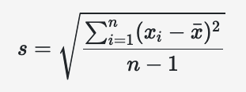

cats |>
summarize(
r = cor( Hwt, Bwt ),
r2 = (cor( Hwt, Bwt ))^2,
sd_y = sd(Hwt),
sd_x = sd(Bwt)
) r r2 sd_y sd_x
1 0.8041274 0.6466209 2.434636 0.4853066Schwab
This is a lecture to explain the math behind linear regression.
It is not necessary to watch it and you do not need it to complete the course.
\(b=\frac{s_y}{s_x}r\)
\(s_y\) is the sample standard deviation in the y values.
\(s_x\) is the sample standard deviation in the x values.
\(r\) is the correlation coefficient.
We know these values from the last video.
We can get our std.errors and r:
To find the sample standard deviation in the past people had to use this:

\(m = b_1 = \frac{s_y}{s_x} r=\frac{2.434}{0.485}(0.804)=4.035\)
We still don’t know how to find r
\(\overline{x}\) and \(\overline{y}\) are on the regression line \(\hat{y}\)
Now we plug everything into the equation of a line and solve for \(b_0\)
I’m rounding for ease.
\(\hat{y} = b_0 + b_1 x\)
\(10.631 = b_0 + 4.035 (2.724)\)
\(10.631 = b_0 + 10.991\)
\(- 0.36 = b_0\)
So our line is: \(\hat{y} = - 0.36 + 4.03 x\) or
\(\widehat{Hwt} = -0.36+ 4.03 \text{Bwt}\)
Warning in tidy.data.frame(cat_model_aug): Data frame tidiers are deprecated
and will be removed in an upcoming release of broom.# A tibble: 8 × 13
column n mean sd median trimmed mad min max
<chr> <dbl> <dbl> <dbl> <dbl> <dbl> <dbl> <dbl> <dbl>
1 Hwt 144 1.06e+ 1 2.43 10.1 10.5 1.55 6.3 e+0 20.5
2 Bwt 144 2.72e+ 0 0.485 2.7 2.69 0.4 2 e+0 3.9
3 .fitted 144 1.06e+ 1 1.96 10.5 10.5 1.61 7.71e+0 15.4
4 .resid 144 7.55e-15 1.45 -0.0921 -0.0473 1.04 -3.57e+0 5.12
5 .hat 144 1.39e- 2 0.00797 0.0117 0.0125 0.00384 6.96e-3 0.0480
6 .sigma 144 1.45e+ 0 0.00789 1.46 1.45 0.00203 1.39e+0 1.46
7 .cooksd 144 9.15e- 3 0.0298 0.00307 0.00448 0.00253 1.01e-6 0.330
8 .std.resid 144 5.37e- 4 1.01 -0.0637 -0.0325 0.719 -2.50e+0 3.62
# ℹ 4 more variables: range <dbl>, skew <dbl>, kurtosis <dbl>, se <dbl>To find the standard deviation in the past people had to use this:
The book shows an equivalent method to do this. Using SST and SSE.
\(r^2=0.65=65\%\)
“65% in the variation of Heart Weight can be explained by the Body Weight”
Rounding again for ease.
\(R^2 = \frac{s_y-s_e}{s_y} = \frac{2.4^2-1.4^2}{2.4^2} \approx 0.65\)
\(r=\sqrt{0.65}\approx 0.80\)